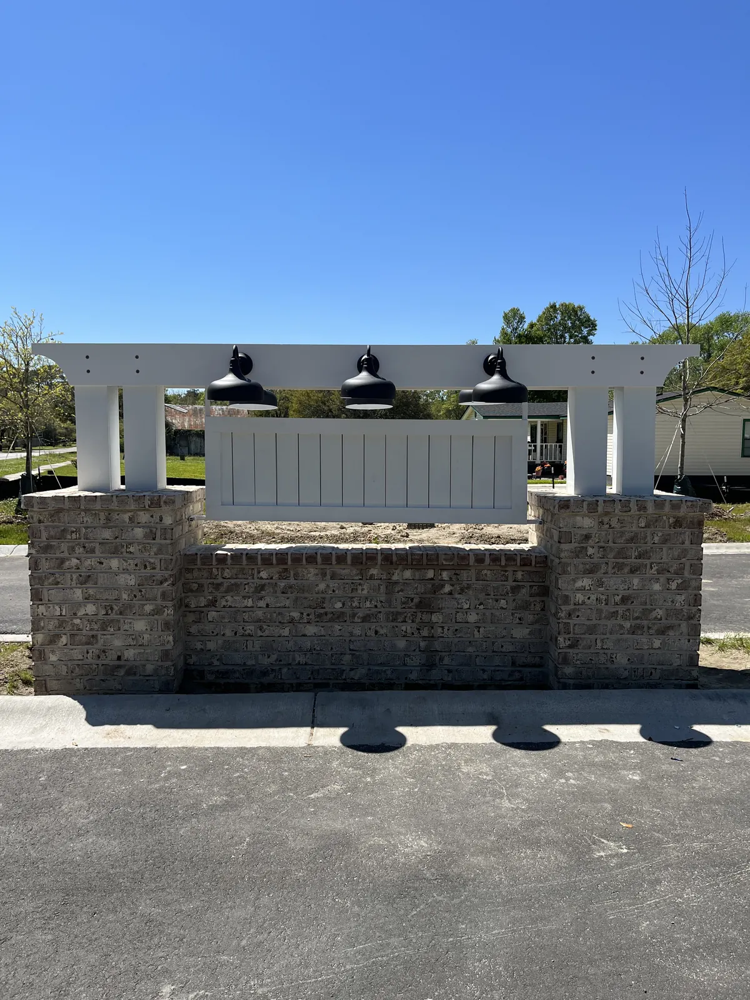
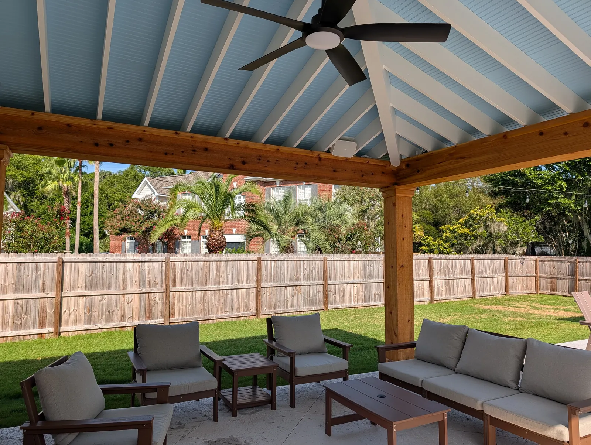

West Ashley, SC Landscaping, Drainage & Yard Upgrades
Landscaping West Ashley, SC

Cramers Landscaping proudly provides high-quality, professional landscaping services in West Ashley, South Carolina. As one of Charleston’s most diverse and established areas, West Ashley features a mix of historic neighborhoods, wooded lots, and growing developments—all with unique landscape needs.
From drainage solutions for older properties to modern upgrades in family-focused communities, our team helps West Ashley homeowners enhance curb appeal, improve functionality, and increase long-term value through custom landscaping.

Trusted by West Ashley Homeowners and Builders
We understand the character of West Ashley. Many homes here sit on larger lots or were built before modern drainage and irrigation were common. Others are part of newer subdivisions where curb appeal is key to maintaining resale value or HOA compliance. At Cramers Landscaping, we tailor each project to your property’s layout, soil conditions, shade patterns, and personal lifestyle goals. Whether you need a new lawn, improved grading, or outdoor living space for entertaining, we bring a thoughtful, long-term approach to every job.Our Landscaping Services On West Ashley
Cramers Landscaping offers a full range of residential and commercial landscaping services throughout the West Ashley area.Landscape Installation

We install sod, shrubs, trees, seasonal color, and mulch with proper grading and soil amendment for long-lasting results. Great for new homes, property flips, and front yard redesigns.
Hardscape Installation

Add patios, walkways, and retaining walls to improve access, reduce erosion, and create outdoor living areas for family use or entertaining.
Irrigation Systems Installation

Avoid under- or over-watering with a professionally installed irrigation system. We design smart, zoned systems customized for different plants, soil types, and sun exposure.
Landscape Maintenance

Our ongoing service plans include mowing, pruning, bed care, and irrigation checks. Ideal for busy families, second homeowners, or anyone who values a polished look year-round.
Drainage & Grading

Older neighborhoods in West Ashley often struggle with pooling water or soggy lawns. We install French drains, dry creek beds, and regrade as needed to protect your home and landscape.
Tree & Shrub Trimming
Proper pruning enhances plant health, safety, and aesthetics. Our crew trims everything from formal hedges to mature oaks and crepe myrtles.
Mulching & Bed Maintenance

Keep your beds clean, defined, and weed-resistant with pine straw, hardwood mulch, or stone. We offer seasonal refreshes and full cleanup services.
Site Structures

Add fences, pergolas, and patio features to your outdoor layout. Our structures are built for durability, privacy, and seamless visual integration with your landscape.
Neighborhoods We Serve In West Ashley
We work throughout West Ashley, including:
- Avondale
- Byrnes Down
- Ashley Hall Plantation
- Shadowmoss
- Grand Oaks
- Moreland
- Ashley Harbor
- Carolina Bay
- West Ashley Plantation
- Village Green
Whether your home is pre-1960s, post-Hugo, or new construction, we tailor our services to meet the architectural style, terrain, and HOA guidelines of your community.
Landscaping For Older Homes

Many homes in West Ashley were built decades ago with outdated drainage systems, compacted soils, and mismatched additions. We’re experienced in navigating these challenges and offer smart solutions such as:
- Grading adjustments to prevent foundation pooling
- Drainage system installation and downspout redirection
- Sod installation and soil aeration for compacted lawns
- Bed cleanup and replanting with native species
- Seamless integration of patios and walkways with existing foundations
Our approach honors the character of your home while modernizing its outdoor functionality.
Ideal for Families and Entertainers
West Ashley is one of Charleston’s most family-friendly areas. Many of our clients come to us for help designing outdoor spaces that support children, pets, and entertaining.
We help homeowners:
- Build shaded play areas
- Create patios with built-in seating or fire pits
- Design low-maintenance lawn alternatives
- Add privacy screening with trees, fencing, or hedges
- Automate watering with smart irrigation systems
If you’re planning to stay in your home long-term, we’ll create a phased plan to add features over time without sacrificing design continuity.
 1 / 2
1 / 2 2 / 2
2 / 2Commercial and Multi-Family Services

- Full landscape installation for new builds
- Irrigation installation and repair
- Commercial-grade sod installation
- Ongoing maintenance and enhancement plans
- Seasonal bed rotation and pruning

Combine Services For Maximum Value
We frequently bundle services for West Ashley homeowners looking to get more done efficiently:
- Landscape Installation + Irrigation
- Hardscaping + Drainage & Grading
- Tree Trimming + Maintenance
You get unified planning, faster timelines, and cost-saving efficiencies when multiple elements are handled by one experienced team.
Frequently Asked Questions
Do you service properties inside and outside I-526?
Yes, we work throughout all of West Ashley—from neighborhoods just off Savannah Highway to subdivisions closer to Bees Ferry Road and Hwy 61.
Do you help with HOA approvals?
We regularly assist clients in submitting landscaping plans to HOA boards for review and approval.
Can I schedule recurring landscape maintenance?
Absolutely. We offer customized service plans based on your property’s needs and seasonal requirements.
Explore Everything We Build
From plantings and drainage to patios, pergolas and outdoor kitchens, see the full range of services we offer in West Ashley and across the Lowcountry.
Request a Free Landscape Consultation
Schedule Your West Ashley Landscaping Consultation
Whether you're upgrading an older home, building a new one, or simply want to improve your yard’s performance and appearance, Cramers Landscaping is your trusted West Ashley partner. We bring years of local experience, clear communication, and exceptional results to every project.
Contact us today to schedule a free consultation and get a quote for your West Ashley landscaping project.